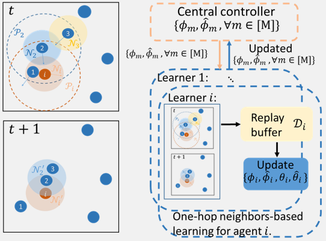
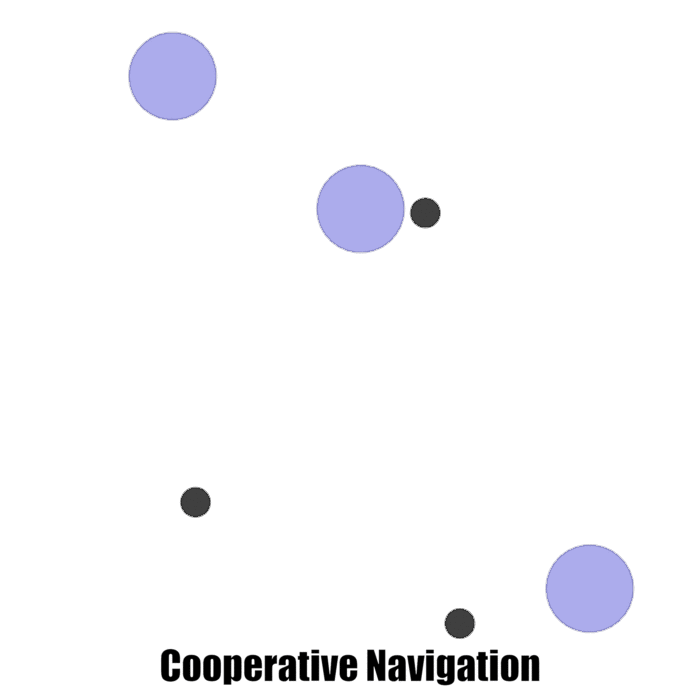
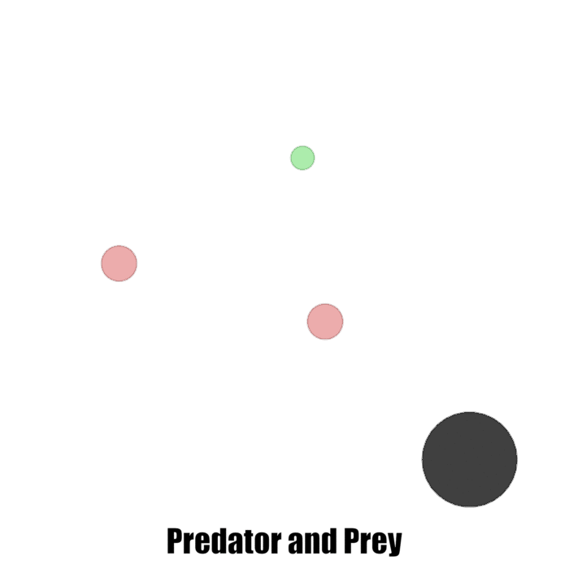
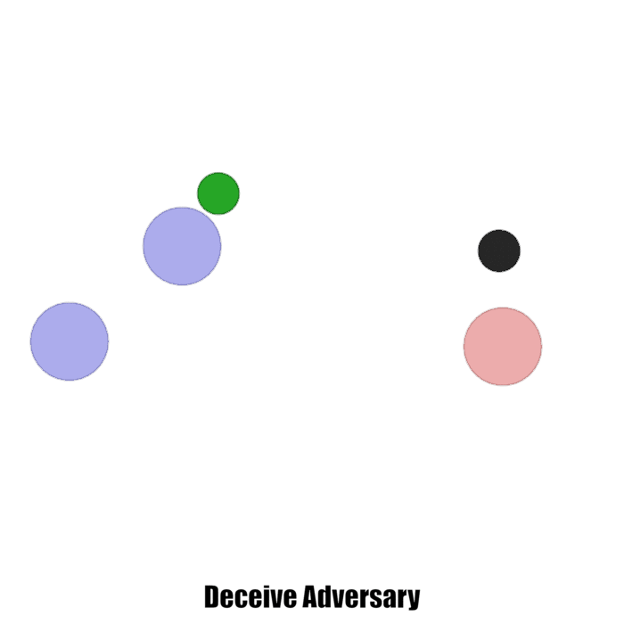
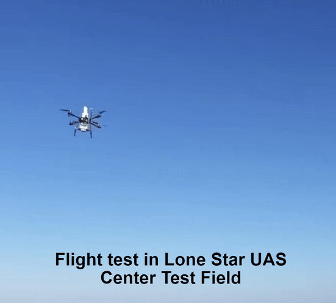
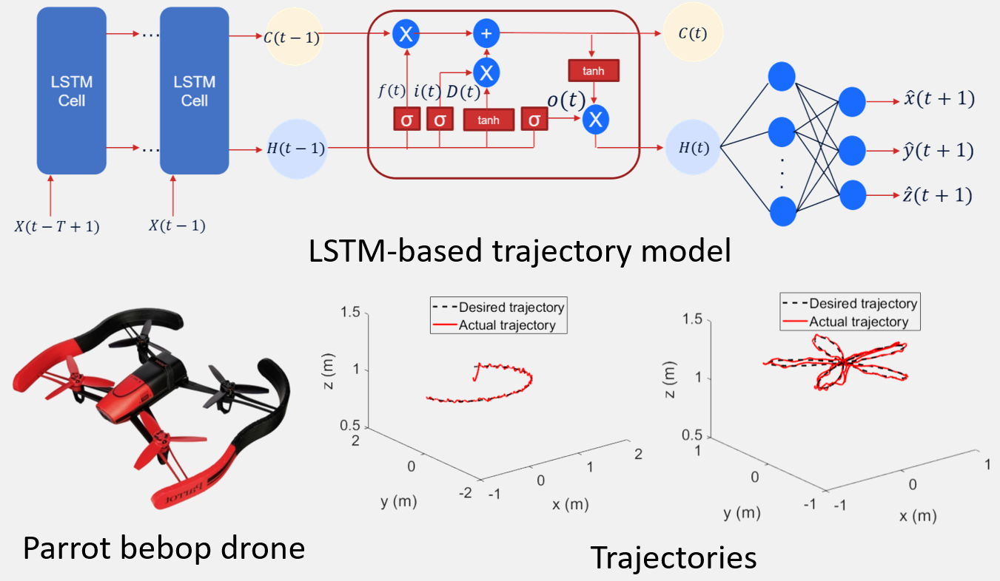
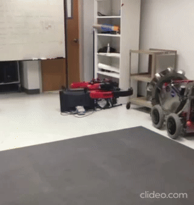

|
Welcome to my personal website! In this website, you will get information about me, my recent news, projects that I have worked on and my publications. Feel free to explore and contact me if you have any questions and comments. I am happy to meet people to discuss new ideas 😀.
I am an Advanced Technologist in Intelligent Systems at The Boeing Company, developing intelligent solutions to improve manufacturing efficiency, product and service quality. In 2023, I obtained my Ph.D. degree in Electrical and Computer Engineering from University of California San Diego and San Diego State University, advised by Prof. Junfei Xie and Prof. Nikolay Atanasov. I received my M.S. degree in Computer Science from Texas A&M University Corpus Christi in 2019 and B.S. degree in Prospecting Technology and Engineering from Yangtze University, China in 2017. Email / Google Scholar / Github / LinkedIn |
{kind=link}
|
|
-
[07.28.2023] I joined The Boeing Company as an intelligent systems engineer.
-
[04.07.2023] I successfully defended my Ph.D. dissertation.
-
[12.12.2022] One paper was accepted to the journal IEEE Transactions on Vehicular Technology.
-
[05.12.2022] I will start a summer internship at The Boeing Company as a Graduate Student Researcher.
-
[11.19.2021] I passed the University Qualifying Exam and became a Ph.D. candidate.
-
[07.10.2021] One paper was accepted to the journal IEEE Transactions on Network Science and Engineering.
|
|
|
This project is to automate livery printing process for commerical airplanes. Our teams adapted the technology commonly used for flat surfaces to precisely apply billions of dots of ink to curved surfaces using a rotatable, eight-axis print head. The new process replaces the old technique of multiple sessions of masking, painting, and waiting for the paint to cure. Instead, every dot of ink stays in place. Traditionally, it takes three to 12 production days to paint liveries. With inkjet printing, the time required for image application will be reduced to just a couple of days, even for complex designs. It also provides better aerodynamics in flight, thanks to the elimination of paint steps and edges. In addition, with the reduction of up to 100 pounds [45 kilograms] of weight resulting from multiple paint layers being replaced by a single thin layer of ink, fuel efficiency is enhanced. 
Boeing Printed Alaska Airlines' New 737 Livery

Livery image for Alask Airlines' 737
Descriptions and images are from public media release Website 1Website 2 |
|
This project investigates scalable multi-agent reinforcement learning in large scale environment with many agents. We proposed a method called Distributed multi-Agent Reinforcement Learning with One-hop Neighbors (DARL1N). DARL1N is featured by one-hop neighborhood decomposition for reward, policy and Q value function, which leads to reduced learning complexity and also allows a fully distributed learning architecture with one-hop neighborhood interaction that improves training efficiency.

One-hop neighbor transition and DARL1N framework.

Cooperative Navigation Environment

Predatory and Prey Environment

Adversary Environment
References: [7][10][12] |
|
The project aims to develop an enhanced open networked airborne computing platform to facilitate the design, implementation, and testing of an airborne computing platform that seamlessly integrates control, computing, communication, and networking. The intellectual merit lies in a new set of enhancements to facilitate more advanced research and applications of airborne computing. Specifically, the proposed infrastructure is enhanced in four major areas. First, hardware/middle-ware update to facilitate distributed control, which includes phased array antennas, next generation of mobile system, and Robot Operating System (ROS) 2. Second, enhancement of communication and networking, which include software-defined radio (SDR), long-term evolution (LTE), and software-defined networking (SDN). Third, enhancement of airborne computing services, which include the target recognition and tracking service, mobile edge computing (MEC) service, and airborne LiDAR (Light Detection and Ranging) data processing service. Last, the incorporation of security features, which include the development of a secure and privacy-preserving federated learning platform and integration of security packages to fulfill essential and advanced security requirements, such as confidentiality, integrity, authentication, and secure computation. 
Prototype of UAV with High Performance Computing and Communication Capability

Flight Test of Single UAV

Prototype of Networked Multi-UAV

Flight Test of Multi UAVs
References: [1][2][3][4][6][8][9][11][13][16][17] |
|
This project models the trajectories of aircraft to capture the physical movement patterns of different aerial vehicles in real scenarios. We investigate a kinematic 3-D random mobility model for fixed wing aircraft and a LSTM model for quadrotors. The trajectory models can be used to capture movement patterns, make future movement predictions and evaluate airbone network, which facilite operation of massive UAV operation in the near future. 
Illustration of 3D Random Mobility Model

Illustration of LSTM-based Trajectory Model for UAV

Flight Test of Parrot Drone
References: [5][14][15] |
|
|
- H. Zhang*, B. Wang*, J. Xie, K. Lu, Y. Wan, S. Fu, Exploring Networked Airborne Computing: A Comprehensive Approach with Advanced Simulator and Hardware Testbed, Unmanned Systems, Oct. 2023. (*Equal Contributions)
- B. Wang, J. Xie, K. Lu, Y. Wan, S. Fu, Learning and Batch-Processing Based Coded Computation with Mobility Awareness for Networked Airborne Computing, IEEE Transactions on Vehicular Technology, Dec. 2022.
- B. Wang, J. Xie, K. Lu, Y. Wan, S. Fu, On Batch-Processing Based Coded Computing for Heterogeneous Distributed Computing Systems, IEEE Transactions on Network Science and Engineering, Vol.8, pp:2438-2454, 2021.
- B. Wang, J. Xie, S. Li, Y. Wan, Y. Gu, S. Fu, K. Lu, Computing in the Air: An Open Airborne Computing Platform, IET Communications, Vol.14, pp. 2410-2419, 2020.
- J. Xie, Y. Wan, B. Wang, S. Fu, K. Lu, A Comprehensive 3-Dimensional Random Mobility Modeling Framework for Airborne Networks, IEEE Access, Vol.6, pp. 22849-22862, 2018.
- B. Wang, J. Xie, K. Ma, Y. Wan, UAV-based Networked Airborne Computing Simulator and Testbed Design and Implementation, 2023 International Conference on Unmanned Aircraft Systems (ICUAS), Jun. 2023.
- B. Wang, J. Xie, N. Atanasov, DARL1N: Distributed Multi-Agent Reinforcement Learning with One-hop Neighbors, 2022 IEEE/RSJ International Conference on Intelligent Robots and Systems, Oct. 2022.
- J. Zhang, B. Wang, D. Wang, S. Fu, K. Lu, Y. Wan, J. Xie, An SDR-based LTE System for Unmanned Aerial Systems, 2022 IEEE International Conference on Unmanned Aircraft Systems, Jun. 2022.
- B. Zhou, J. Xie, B. Wang, Dynamic Coded Convolution with Privacy Awareness for Mobile Ad Hoc Computing, 2022 IEEE International Conference on Unmanned Aircraft Systems, Jun. 2022.
- B. Wang, J. Xie, N. Atanasov, Coding for Distributed Multi-Agent Reinforcement Learning, 2021 International Conference on Robotics and Automation (ICRA), Jun. 2021.
- D. Wang, B. Wang, J. Zhang, K. Lu, J. Xie, Y. Wan, S. Fu, CFL-HC: A Coded Federated Learning Framework for Heterogeneous Computing Scenarios, 2021 IEEE Global Communications Conference (Globecom), Dec. 2021.
- B. Wang, J. Xie, K. Lu, Y. Wan, S. Fu, Multi-Agent Reinforcement Learning Based Coded Computation for Mobile Ad Hoc Computing, 2021 International Conference on Communications (ICC), Jul. 2021.
- C. Douma, J. Xie, B. Wang, Coded Distributed Path Planning for Unmanned Aerial Vehicles, 2021 AIAA Aviation Forum, Jun. 2021.
- B. Wang, J. Xie, J. Chen, Data-Driven Multi-UAV Navigation in Large-Scale Dynamic Environment Under Wind Disturbances, 2021 AIAA Scitech Forum, Jan. 2021.
- B. Wang, J. Xie, Y. Wan, G. A. G. Reyes, L. R. G. Carrilo, 3-D Trajectory Modeling for Unmanned Aerial Vehicles, 2019 AIAA Scitech Forum, Jan. 2021.
- B. Wang, J. Xie, K. Lu, Y. Wan, Coding for Heterogeneous UAV-based Networked Airborne Computing, 2019 IEEE Global Communications Conference (Globecom) Workshop, Dec. 2019.
- B. Wang, J. Xie, S. Li, Y. Wan, S. Fu, K. Lu, Enabling High-Performance Onboard Computing with Virtualization for Unmanned Aerial Systems, 2018 International Conference on Unmanned Aircraft Systems (ICUAS), Jun. 2018.
|
This website is built by using template from Jon Barron |